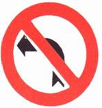

| شاخصات (إشارات) الإرشاد |
| ب-1 |
ب-2 |
ب-3 |
 |
 |
 |
مغلق أمام جميع المركبات بما
في ذلك عربات اليد
(من كلا الاتجاهين) |
مغلق أمام جميع المركبات بما
في ذلك عربات اليد
(شارع باتجاه واحد) |
ممنوع الاستدارة نحو اليسار |
|
|
|
| ب-6 |
ب-7 |
ب-8 |
|
 |
|
ممنوع الاستدارة إلى اليسار
للسير في الاتجاه المعاكس |
أعط حق الأولوية في الطريق
الضيقة لحركة السير المقابلة |
ممنوع التجاوز
أو العبور عن مركبة
ميكانيكية تسير على أكثر من
عجلتين في نفس
اتجاه السير
|
|
|
|
| ب-9 |
ب-10 |
ب-11 |
|
|
 |
| نهاية مقطع الطريق الذي يسري عليه قيد التجاوز |
لا يجوز لمركبة تجارية يزيد وزنها
الإجمالي المسموح به عن 4 أطنان
أن تتجاوز أو أن
تمر عن مركبة ميكانيكية
تسير على اكثر من عجلتين
|
ممنوع التجاوز أو العبور عن مركبة ميكانيكية
تسير على
أكثر من عجلتين في نفس اتجاه
السير
|
|
|
|
| ب-12 |
ب-13 |
ب-14 |
|
|
|
ممنوع دخول المركبات الميكانيكية باستثناء
الدراجة النارية بدون عربة جانبية |
ممنوع دخول الدراجات النارية |
ممنوع الدخول جميع المركبات الميكانيكية |
|
|
|
| ب-15 |
ب-16 |
ب-17 |
 |
 |
|
ممنوع دخول المركبات الميكانيكية التجارية
التي يزيد وزنها الإجمالي المسموح به
عما
هو مسجل في الشاخصة
|
ممنوع دخول جميع المركبات
التي يزيد وزنها الإجمالي
المسموح به عما هو مسجل في
الشاخصة
|
ممنوع دخول مركبة وحمولتها والتي يزيد
عرضها عما هو مسجل في الشاخصة |
|
|
|
| ب-18 |
ب-20 |
ب-21 |
 |
 |
|
ممنوع دخول مركبة وحمولتها والتي يزيد
ارتفاعها عما هو مسجل في الشاخصة |
سرعة خاصة: ممنوع السير بسرعة تزيد
عن عدد الكم/ساعة المسجل في الشاخصة |
نهاية المقطع الذي فيه السرعة الخاصة |
|
|
|
| ب-24 |
ب-25 |
ب-28 |
 |
|
|
| الدخول إلى طريق أو طرق بلدية |
نهاية الطريق أو الطرق البلدية |
ممنوع وقوف مركبة في الطريق في
الجهة التي أُقيمت فيها الشاخصة |
|
|
|
| ب-29 |
ب-30 |
ب-31 |
|
 |
 |
ممنوع الوقوف والتوقف في
الطريق في الجهة التي
أُقيمت فيها الشاخصة
إلا لتنفيذ
أمر قانوني
|
ممنوع وقوف مركبة تجارية
يزيد وزنها الإجمالي المسموح به عن
10000كغم في المنطقة
التي أُقيمت
في بدايتها الشاخصة
|
نهاية المنطقة التي يُمنع
فيها وقوف مركبة تجارية
يزيد وزنها الإجمالي
المسموح به
عن 10000كغم
|
|
|
|
| ب-32 |
ب-33 |
ب-34 |
|
|
|
نهاية المنطقة التي
يُمنع فيها الوقوف أو التوقف
(إلغاء الشاخصتين رقم : ب-28 و
ب-29)
|
الدخول إلى منطقة
يحظر فيها دخول مركبة تعليم
السواقة أثناء التعليم ما عدا الباص
|
نهاية المنطقة التي
يحظر فيها دخول مركبة
تعليم السواقة أثناء التعليم |
|
|
|
| ب-35 |
ب-36 |
ب-37 |
 |
|
 |
يجوز السفر في الشارع أو في
المسلك للقطار الخفيف وللباص
والصالون العمومي وللمركبات
التي
تنقل على الأقل عدد
الركاب المذكور في الشاخصة
|
أعطِ حق الأولوية لحركة السير في
الطريق القاطعة أمامك |
قف!
وأعطِ حق الأولوية
لحركة السير في الطريق
القاطعة أمامك |
|
|
|
| ب-38 |
ب-39 |
ب-41 |
 |
 |
|
قف!
(شاخصة متنقلة) |
تقدم بحذر
(شاخصة متنقلة) |
سر إلى اليسار من أمام
الشاخصة إذا كان السهم
باللون الأصفر يدل على
اتجاه السير
للمواصلات
العمومية فقط
|
|
|
|
| ب-43 |
ب-44 |
ب-46 |
 |
|
 |
سر إلى اليسار من خلف
الشاخصة اذا كان السهم
باللون الأصفر يدل على
اتجاه السير
للمواصلات
العمومية فقط
|
سر إلى الأمام
(إذا كان السهم مائلاً فسر باتجاه السهم)
إذا كان السهم باللون الأصفر
يدل
على اتجاه السير
للمواصلات العمومية فقط
|
سر إلى اليسار أو إلى
الأمام إذا كان السهم
باللون الأصفر يدل على
اتجاه السير
للمواصلات
العمومية فقط
|
|
|
|
| ب-47 |
ب-48 |
ب-49 |
|
 |
 |
سر إلى اليمين
أو إلى اليسار إذا كان
السهم باللون الأصفر يدل
على اتجاه السير
للمواصلات
العمومية فقط
|
أعطِ حق الأولوية لحركة
السير القاطعة طريقك
والتي تسير حول الدوار
واعبر الدوار
من جانبه الأيمن
|
يجوز عبور المكان
الموسوم بهذه الشاخصة
من اليمين أو من اليسار
إذا كان السهم
باللون
الأصفر يدل على اتجاه
السير للمواصلات العمومية فقط
|
|
|
|
| ب-51 |
ب-52 |
ب-53 |
 |
|
 |
اعبر المكان الموسوم بالشاخصة
من جانبه الأيسر |
طريق للمركبات الميكانيكية فقط |
طريق للمركبات الميكانيكية
التي تستطيع ويجوز لها
السير بسرعة لا تقل
عن ما هو
مسجل في
الشاخصة بالكم/ساعة
|
|
|
|
| ب-54 |
ب-55 |
ب-57 |
 |
 |
|
الدخول إلى طريق سريعة:
ممنوع دخول المشاة
والدراجات الهوائية
والمركبات البطيئة
وعربات
اليد والحيوانات ولكل
مركبة لا تستطيع ولا يجوز
لها السير بالسرعة
المذكورة في الشاخصة
ب-53
|
نهاية الطريق السريعة |
مكان إنزال واصعاد
الركاب للصالون العمومي
بدون انتظار |
|
|
|
| ب-58 |
ب-59 |
ب-60 |
 |
|
 |
محطة صالون عمومي:
ممنوع وقوف أو توقف
أية مركبة أخرى
باستثناء إنزال الركاب |
نهاية منطقة محطة الصالون العمومي |
ممنوع دخول التراكتورات ومركبات العمل |
|
|
|
| ب-61 |
ب-62 |
ب-63 |
 |
 |
 |
| ممنوع دخول الحيوانات أو العربات التي تجرها الحيوانات |
ممنوع دخول الدراجات الهوائية |
سبيل للدراجات الهوائية فقط |
|
|
|
| ب-63-أ |
ب-64-ب |
ب-64 |
 |
|
|
| سبيل للدراجات الهوائية وللمشاة فقط |
سبيلان منفردان للدراجات الهوائية وللمشاة فقط |
ممنوع دخول المشاة بما في ذلك طرف الطريق |
|
|
|
| ب-65 |
ب-66 |
 |
 |
| سبيل للمشاة فقط |
ممنوع دخول
مركبة تنقل مواد خطرة
والملزمة بوسم بموجب القانون |